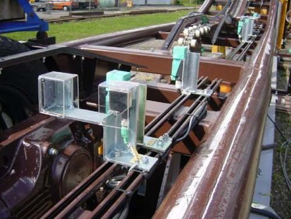
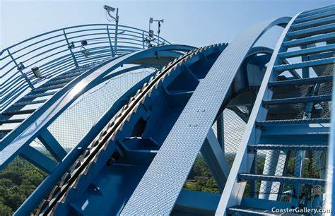

What is a Fail Safe?
Have you ever heard of Murphy’s Law? Murphy’s law states “If anything can go wrong it will.” Roller Coaster designers and Parks recingze the importance Murphy’s law. That is why Roller Coasters have something called fail-safes. A fail-safe is a device, mechanism, or protocol that will be triggered if any failure in the ride occurs. Coasters have hundreds of fail-safes that keep millions of riders safe in case something happens. Below are just a select few fail-safes iofncluded on coasters.
Sensors
Knowing where a train is on the track is a necessity for the coaster operators. Most Roller Coasters today have a very powerful computer helping to run the ride. These computers monitor everything from the status of each restraint to the position of the train on the track. Coasters often have many sensors placed throughout the layout which feeds information to the ride operator. Without these small yet powerful tools Operators would not receive real-time information on the whereabouts of every train.

Block Brakes
Roller Coasters often have more than one train on the track at a time. This is done to boost capacity in order to keep the lines moving throughout the day. To understand the use of Block Brakes you must understand Block Sections. Roller coasters are divided into sections that are only allowed to have one train in that section. In order to separate these sections Roller Coasters have block brakes. These Brakes are capable of stopping a train if the block ahead is occupied. Without these block sections, trains would risk hitting each other.

Anti Rollback
Have you ever wondered what that click-clack sound on Roller Coasters is? As trains rise up a lift they build potential energy. If the chain was to stop for whatever reason the train would stop, instead of rolling back down the lift hill. That is the magic of an anti-rollback device. That clicking sound commonly heard was the anti-rollback device passing over groves next to the chain. If the chain stops for any reason the train will catch on to the groves and will not move backward. Then either riders will be removed from the train or the ride will start moving again momentarily.

Test Seat
A fear for many people is that they may fly out of the train. This is not the case however. Not only do restraints have their own fail-safes there is a test seat outside most coasters. THESE TEST SEATS ARE NOT JUST AWESOME PHOTO OPS. A test seat is the same seat that will be on the ride. Sitting in the test seat and pulling down the restraint will make a little green light turn on if the restraint can lock. This means if you are the right height and the green light goes off, then you won’t fly out. Use test seats if you are unsure about if the ride can accommodate you.